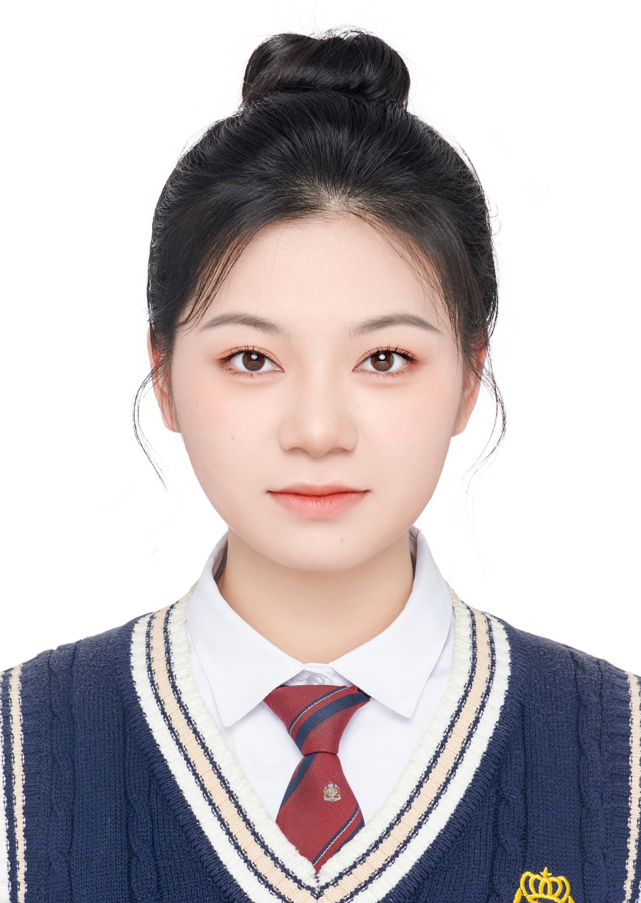

2020.09 - 2024.06
湖南工商大学 工商管理（本科）
GPA 3.25 / 4.0，专业排名前 20%，获校级奖学金。
相关课程：运营与供应链管理、管理学原理、项目管理、微积分、线性代数、概率论与数理统计、Python、ERP 沙盘模拟训练等。

ABOUT
我具备工商管理本科背景，系统学习过运营与供应链管理、管理学原理、项目管理、统计与数学基础课程。后续希望围绕智慧港口与港口物流等实际场景开展学习与研究，逐步探索运筹优化、强化学习等方法在 AGV 调度及港口运营决策中的应用。
我希望在后续学习中，进一步提升数据处理、优化建模和科研表达能力，形成能够连接管理问题与实际分析的工作方法。
EDUCATION
GPA 3.25 / 4.0，专业排名前 20%，获校级奖学金。
相关课程：运营与供应链管理、管理学原理、项目管理、微积分、线性代数、概率论与数理统计、Python、ERP 沙盘模拟训练等。
RESEARCH
参与课题组研究，负责省级面板数据收集与清洗、文献整理分类和基础描述性统计分析；协助完成政策资料梳理及论文图表前期处理。
参与项目进度管理与系统流程梳理；协助完成 BMS 系统均衡充放电逻辑框架设计、数据整理、可行性分析及项目申报材料撰写。
EXPERIENCE
参与国有集团及医疗健康企业组织与人力资源体系优化咨询，协助开展组织架构、岗位职级、人员配置、薪酬与绩效调研；完成数据整理与对标分析、客户访谈、材料汇总及方案报告撰写，支持优化建议落地。
从事数学课程教学与学生沟通工作，积累了课程组织、表达协作和问题处理经验。
CAMPUS
HONORS